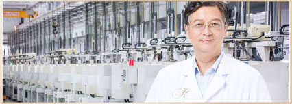
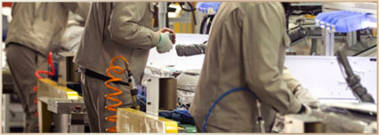
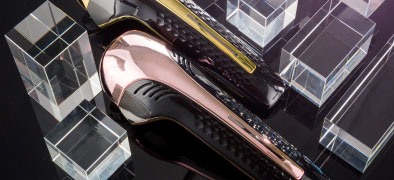

Miracle KII 降临中国
50年专注家庭健康，日本万千家庭之选
50年以来，高阳社一直致力于为家庭健康而服务，获得了日本民众乃至全球无数家庭的赞赏和认可，晋升日本直销企业排名top5。
高阳社不光产品享誉全球，其“工匠精神”的企业文化，也处处体现在所见的细节——对工作执着的热情、对产品的精益求精、对企业的忠诚奉献。很多员工都已经完完整整地陪伴着高阳社走过了50个年头。



Miracle KII 降临中国
50年专注家庭健康，日本万千家庭之选
50年以来，高阳社一直致力于为家庭健康而服务，获得了日本民众乃至全球无数家庭的赞赏和认可，晋升日本直销企业排名top5。
高阳社不光产品享誉全球，其“工匠精神”的企业文化，也处处体现在所见的细节——对工作执着的热情、对产品的精益求精、对企业的忠诚奉献。很多员工都已经完完整整地陪伴着高阳社走过了50个年头。

“魅影”技惊四座，重新寻找最接近完美的作品
Miracle k II 高野泰树封关之作
2016年，高阳社独创的“魅影”美容仪等一经面世，即引发轰动：这款不用去美容院、随身携带方便的美容仪，用完不光能让脸部“焕然一新”，还为亿万消费者节约了成本和时间。
魅影”的巨大成功并不能满足高野泰树先生对美容事业的极致野心。在他的看来，依然还未找到在他心中那款“终极的、极致的”美容仪产品。
在总结“魅影”的不足后，高野先生斥重金组建研发团队，请来全球顶尖美容科研人才，花费三年时间，精心雕琢打磨，不断完善产品设计和使用功能。2019年3月，最接近他心中完美产品的新一代健康美容仪测试成功!高野先生将其命名为Miracle k II（圣迹KⅡ），一款能带来肌肤奇迹的产品。
高野泰树
享誉世界的美容大师
东方的肌肤，让懂东方肌肤的大咖来呵护
创立提高人体自然免疫力的“驱寒健康法”日本健康美业内泰斗级的专业大师
Miracle k II（圣迹KⅡ）不仅是一台美容仪，它还将利用大数据技术，为每位爱美人士打造一个专属“美丽再生银行”（Beauty Recycle Bank）。每个圣迹KⅡ的用户，都将拥有一个独一无二的编码，将它与APP链接后，将完整记录用户的皮肤管理进程，并用大数据进行分析比对，给出建议。在这个数据银行里，圣迹KⅡ将和您一起见证，美的奇迹。此外，圣迹KⅡ还设有专属的个人护肤行程提醒功能。无论您居家还是出门，如果太忙忘记使用 ，只要圣迹KⅡ在，它都会第一时间给您提醒。